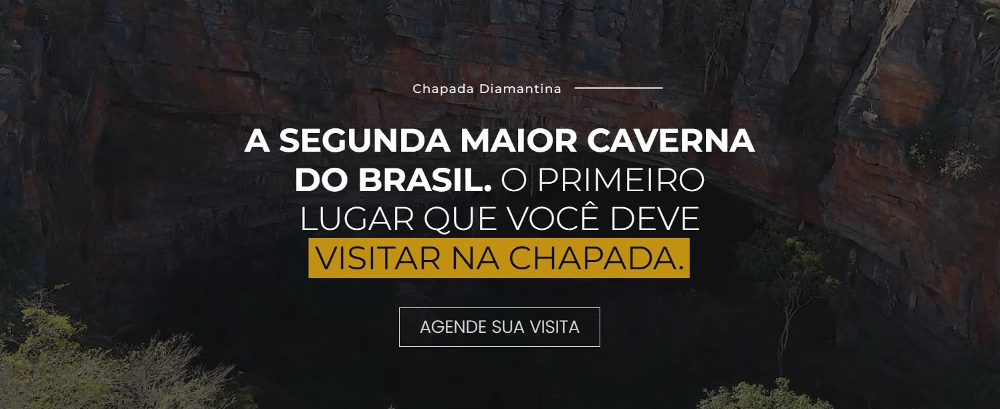
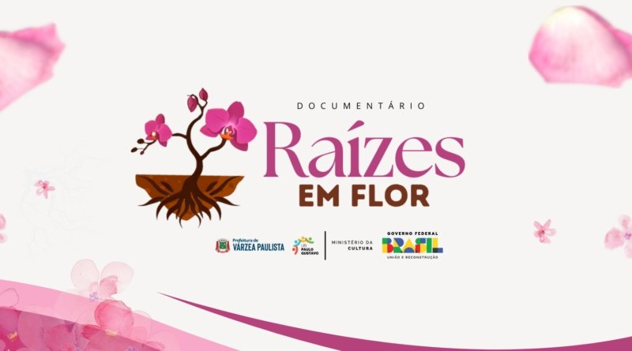

Já vendi cavernas, cidades e até manobra de navio.
Mas o mais difícil foi escrever essa frase sem parecer que estou inventando.
Projetos
Se você chegou até aqui, possivelmente quer conhecer um pouco mais do meu trabalho. Estes são os cases que eu mais gosto de mostrar.
-

Gruta da Lapa Doce
Posicionamento e linguagem para um destino turístico que merecia sair do texto genérico.
- Posicionamento
- Conceito
- Tom de voz
- Copy de site
-

Raízes em Flor
Roteiro e curadoria de um documentário sobre a história de Várzea Paulista.
- Documentário
- Roteiro
- Curadoria
- Estratégia editorial
-

Semana de Inovação de Ilhéus
Conceito, tom de voz e copy para um evento que fala com empreendedores em momentos diferentes.
- Conceito
- Tom de voz
- Copy de site
- Evento
-
Tecnologia B2B
Estratégia, pesquisa e comunicação para uma marca de tecnologia B2B estruturada desde o começo.
- Brand building
- Estratégia
- Posicionamento
- Tom de voz
- Playbook
Antes da frase, vem a ideia.
Direção de criação, conceito, branding e texto para marcas que precisam ser entendidas rápido e lembradas por mais tempo.
Ver o que eu façoO que dizem sobre trabalhar comigo
Além de ser um excelente profissional, o Erick é um ótimo ouvinte. Sabe entender o que realmente precisamos, interpretar diferentes necessidades e enxergar o processo como um todo.
O Erick consegue captar muito bem a ideia do cliente e trazer caminhos inovadores sem perder a essência do projeto. Os planejamentos são muito bem construídos e as entregas são sempre no prazo.
Mais do que um trabalho bem feito, encontrei um parceiro de projetos. Começamos com uma demanda pontual e, com o tempo, o Erick passou a contribuir em diferentes frentes.
O próximo item dessa lista pode ser o seu projeto.
Se existe um briefing, uma campanha ou uma ideia que ainda precisa encontrar forma, provavelmente temos assunto.